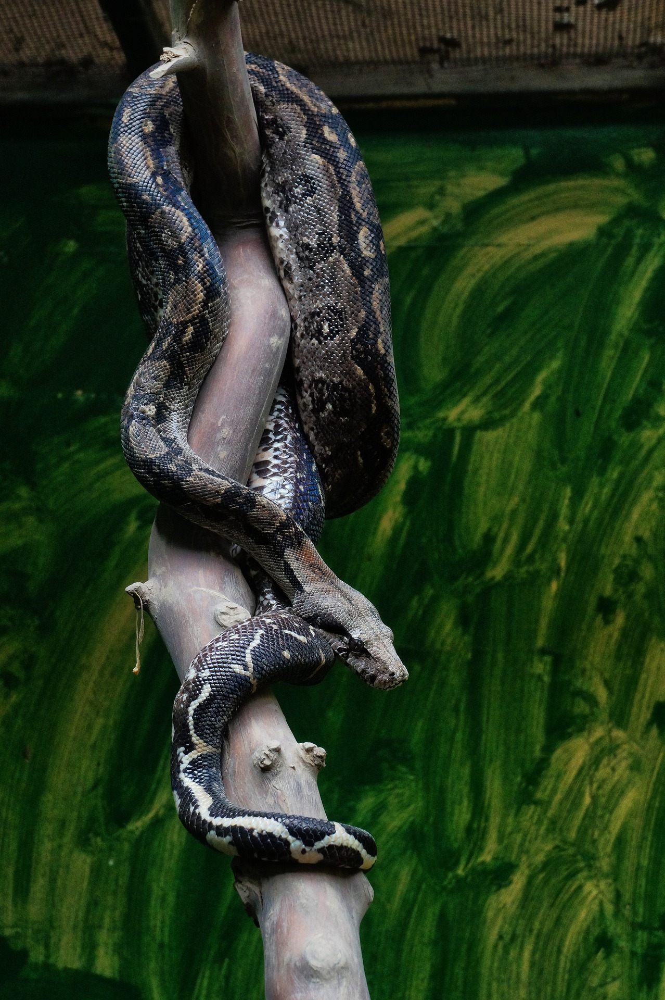

La boa es una serpiente grande que vive en las regiones tropicales de América. Se encuentra desde México hasta Sudamérica. En la península de Yucatán es conocida comúnmente como mazacuata.
Su hábitat natural incluye selvas, bosques tropicales y zonas cercanas a ríos. Prefiere lugares con mucha vegetación donde pueda esconderse para cazar.
La boa tiene un estilo de vida principalmente nocturno. Durante el día suele descansar en árboles o entre la vegetación. Por la noche sale a cazar pequeños mamíferos, aves y reptiles.
A diferencia de otras serpientes, la boa no tiene veneno. Mata a sus presas envolviéndolas con su cuerpo y apretándolas hasta detener su respiración.
Características